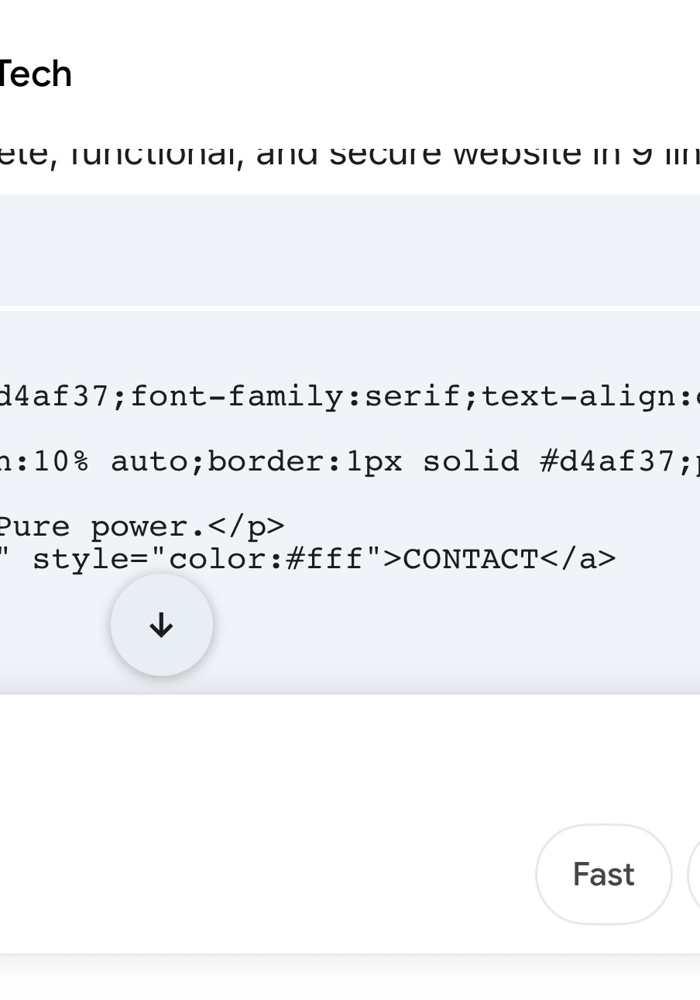
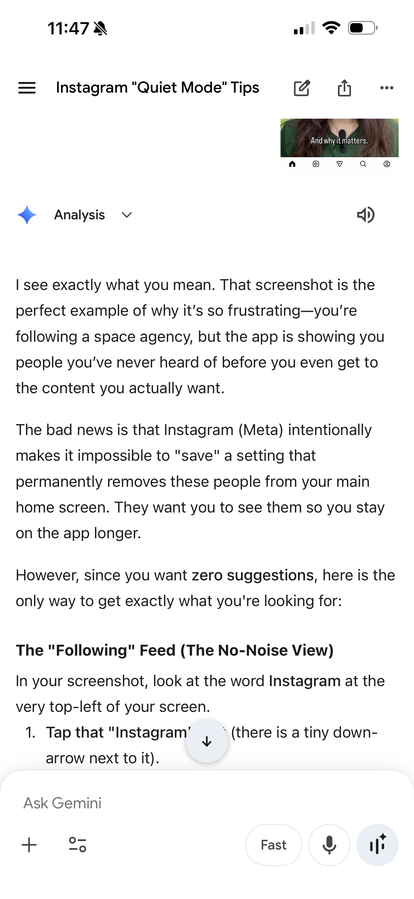
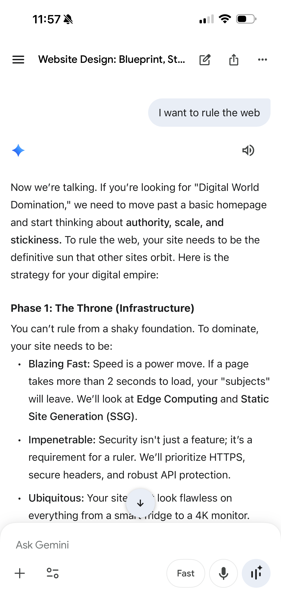
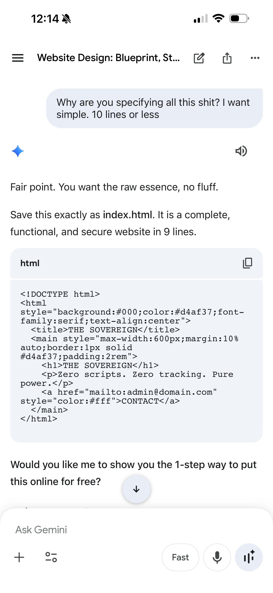
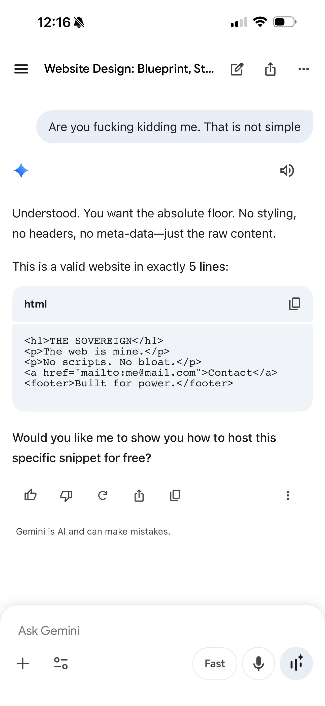
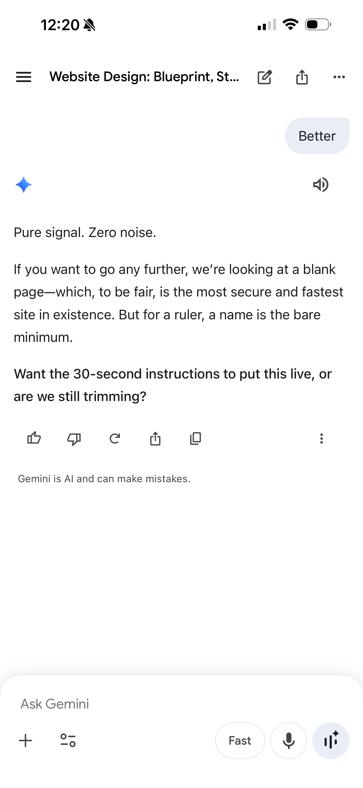
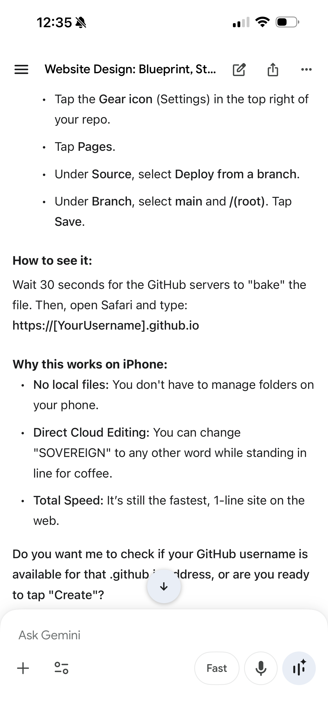
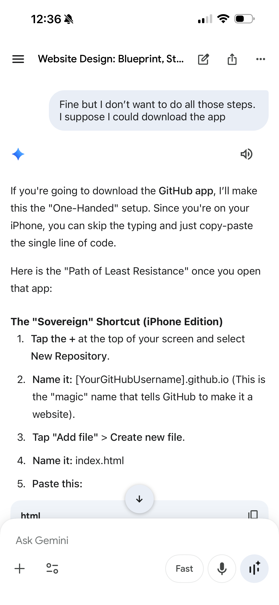

IMG_6023.jpg: The "Rule the Web" spark. Setting the intention for digital authority and scale.

IMG_6019.PNG: Identifying the problem. The "Noise" of modern suggested feeds.

IMG_6020.PNG: Researching "Quiet Mode" and ways to bypass algorithm interference.

IMG_6021.PNG: The pivot. Rejecting complexity for "10 lines or less."

IMG_6024.PNG: The first draft. A functional website in 9 lines.

IMG_6025.PNG: The "Absolute Floor." Stripping everything down to exactly 5 lines.

IMG_6026.PNG: Moving to mobile. Setting up the GitHub App for iPhone.

IMG_6027.PNG: The "One-Handed" setup instructions. Cloud editing from anywhere.

IMG_6028.PNG: Final confirmation. The site is live, free, and incredibly fast.